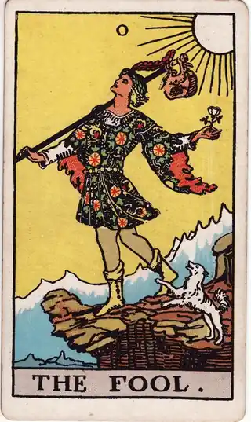

READING
引っ越しするかどうかを決める考え方
・ DECIDE. 編集部

物件サイトのお気に入りが、また増えている。今の家に不満はある。狭さ、日当たり、通勤の遠さ、夜に響く隣の音。でも、決定的な理由がないまま契約更新の時期が来て、「あと2年ここでいいか」と先送りしてしまう。引っ越しの案内や新生活の話題を目にするたびに、気持ちだけが少しずつ掻き立てられていく。引っ越しの決断が重いのは、「するかしないか」に加えて「いつ」「どこへ」まで、決めることが三つも重なっているからです。
先に言っておくと、このページのゴールは「引っ越すべきかどうか」の判定ではありません。ゴールは、三つ重なった決断をほどいて、今の自分に必要な決断だけを下せるようにすることです。「いつか引っ越したい」という漠然とした不満のままでは、更新のたびに同じ迷いが戻ってきます。
POINT 01 引っ越しの決断は、三つに分けると軽くなる
一つ目は「するかしないか」。鍵は、今の家への不満の正体です。家賃が高いのか、部屋が狭いのか、環境が合わないのか、通勤が遠いのか。そして、その不満は本当に「家の問題」なのか、仕事の忙しさや生活リズムの問題が家への不満に見えているだけではないか。ここが分かると、引っ越しが解決策になるかどうかが見えてきます。
二つ目は「時期」。引っ越しの費用は時期で大きく変わります。3月の繁忙期は単身でも10万〜15万円かかることがある一方、落ち着いた時期なら5万〜8万円で済むこともあります。初期費用全体では、敷金・礼金・仲介手数料などで家賃の4〜6か月分が目安。家賃8万円なら32万〜48万円です。更新料（家賃1か月分）を払う前か後かでも、動く意味は変わります。
三つ目は「場所」。通勤時間が片道30分縮まれば、往復で1日1時間、平日だけで年間およそ250時間を取り戻せます。家賃が月1万円上がっても、それは「時間を買う」出費と考えることができます。三つを分けて考えれば、今決めるのは「するかしないか」だけにして、時期と場所は条件として置いておけます。決断が軽くなるのは、その分解からです。
もう一つ大切なのは、「しない」と決める場合にも条件が要るということです。不満の一部は、引っ越さなくても解けます。収納の見直し、家具の配置換え、思い切った断捨離や小さな修繕。数万円の工夫で解ける不満と、家そのものを変えなければ解けない不満を分ける作業です。引っ越し以外で解けるものを先に潰しておくと、「するかしないか」の判断がずっと正確になります。
POINT 02 カードの視点で見る

運命の輪は、回り続ける大きな輪の姿で、「転機」「タイミング」「巡り合わせ」を表します。引っ越しには、契約更新、転職、家族の変化といった外側の節目がつきものです。運命に任せろという意味ではなく、輪が回るタイミングに自分で乗るという視点です。節目が来ているのに動かないでいるのか、節目でもないのに焦って動こうとしているのかを、確かめさせます。
ワンドの8は、空を勢いよく飛ぶ8本の棒の姿で、「急展開」「スピード」「一気に進む」を表します。物件探しは実際に足が速く、いい部屋は内見から申込みまで数日で埋まることも珍しくありません。決めたあとに必要な速さを示す一方で、「勢いのまま決めてしまう」ことへの注意でもあります。スピードが要る場面と、一晩置くべき場面を見分ける視点です。

愚者は、荷物ひとつで崖の縁を軽やかに歩く若者の姿。「始まり」「自由」「身軽さ」を表します。今の暮らしの延長ではない、新しい日常への一歩を象徴するカードです。ただし、無計画を肯定するものではありません。初期費用と条件を整えたうえでの軽やかさこそ、引っ越しを前向きな決断に変えてくれます。
POINT 03 今の家への不満を、記録に残す
引っ越しの迷いは、記録でほどけていきます。夜中に隣の音で目が覚めた、冬の部屋が寒くてつらい、通勤でぐったりして帰る。そんな瞬間をその都度短くメモしておくと、「なんとなく出たい」という感覚が、具体的な条件のリストに変わっていきます。そのリストが、そのまま次の家のチェックリストになります。
引っ越したあとも、記録は効きます。あの不満は新しい家で解けたのか、解けなかったものは何か。振り返りが残っていると、「自分が住まいに本当に求めているもの」が言葉になっていきます。それは、何年かあとの住み替えのときに、物件サイトの条件検索より頼りになる判断材料です。
物件を見に行った日の記録も、残しておく価値があります。内見の印象は、帰宅すると混ざり合って、どの部屋の何が良かったのか曖昧になっていきます。その日のうちに「良かった点・気になった点・家賃と初期費用」を短く残しておけば、複数の物件を同じ物差しで比べられます。決めきれない理由の多くは、比べる材料が記憶の中で溶けてしまっていることです。カードを引いたときの状態と一緒に残せば、不満が事実なのか、その日の疲れなのかも見返せます。引っ越しを決められないときの整理は、引っ越しを決められないときのページにもまとめています。
POINT 04 自分への問いかけ
最後に、今の家に向けて問いかけてみてください。不満を三つ、具体的に言えるか。その不満は、引っ越しでしか解けないものか。初期費用の総額と、貯金への影響を把握しているか。契約更新まで、あと何か月あるか。通勤時間を買い戻すとしたら、家賃に月いくらまで上乗せできるか。引っ越した先での、平日の朝の過ごし方は具体的に描けるか。そして、「あと2年様子を見る」と決めるなら、それも先送りではなく一つの決断として、自分の言葉で言えるか。
住む場所を決めることは、毎日の暮らしの形を決めることです。する・しない、時期、場所。そのどれか一つでも自分の言葉で決められたら、迷いは確実に軽くなっています。